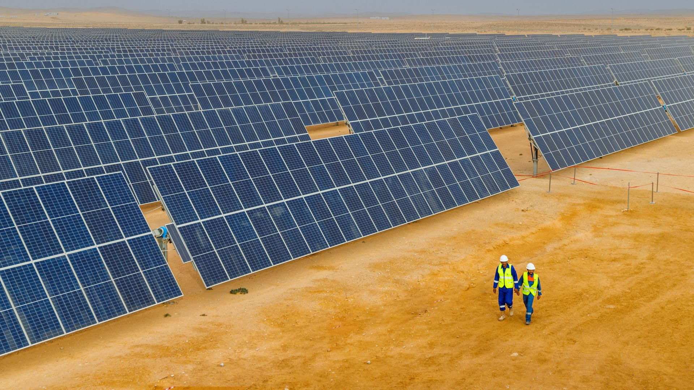
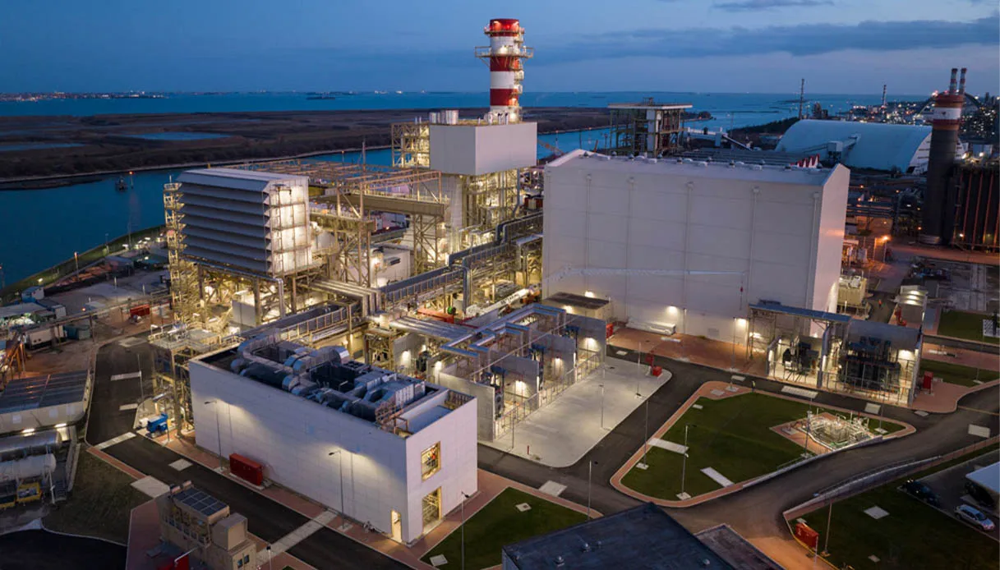
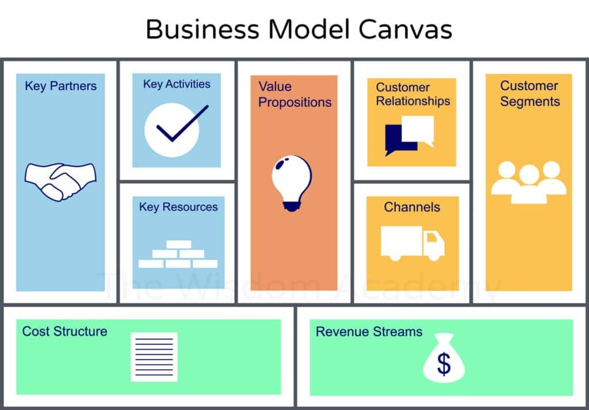
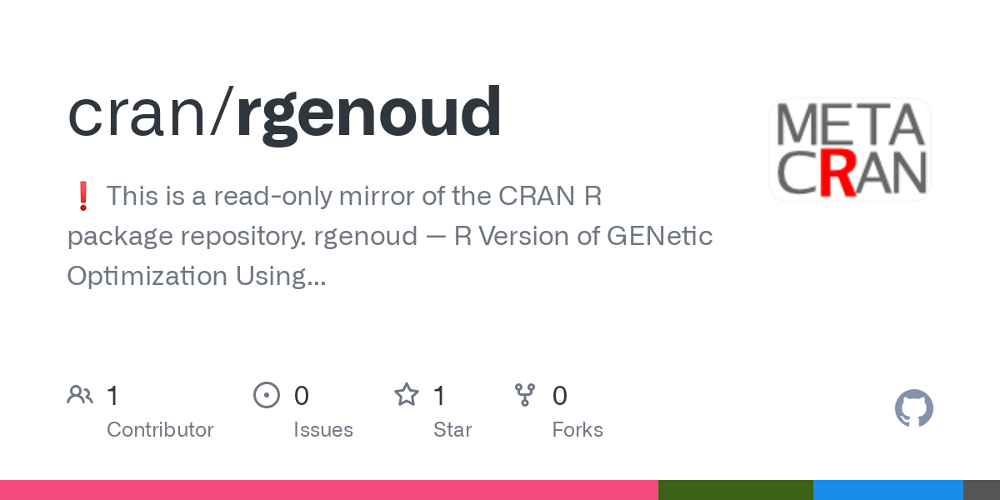
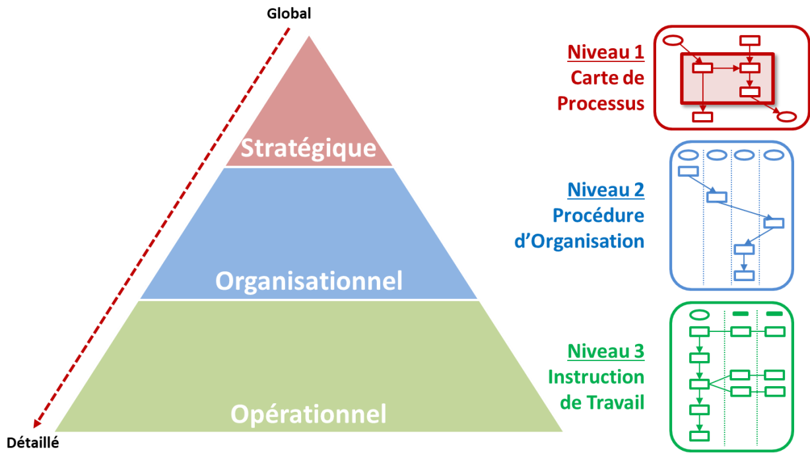
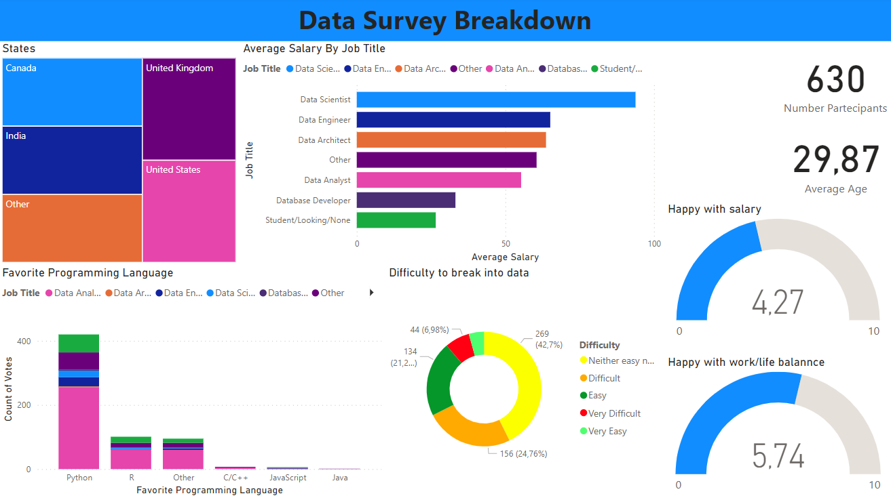
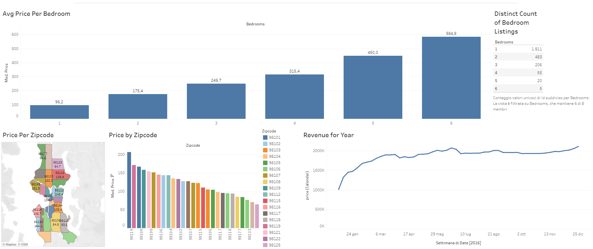
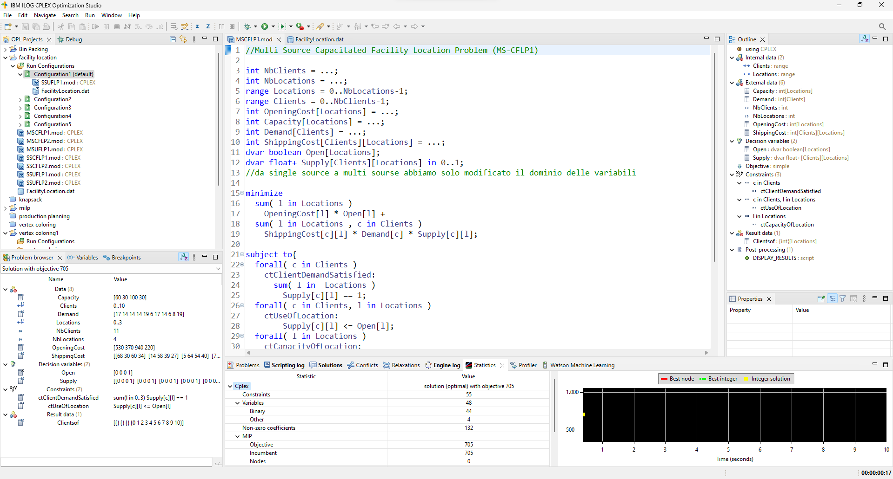
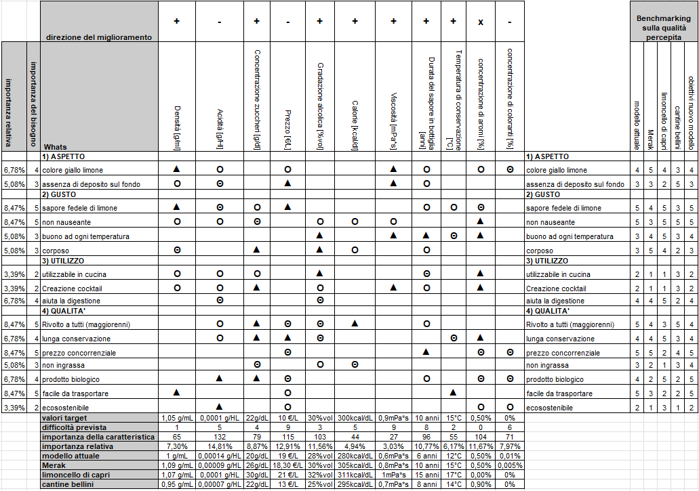

Questa sezione analizza le innovazioni nel fotovoltaico, focalizzandosi su inseguitori e concentratori solari. Viene illustrato come gli inseguitori solari ottimizzino l'efficienza dei pannelli fotovoltaici e come i concentratori, massimizzino l'assorbimento solare. Si conclude con un'analisi di due impianti, evidenziando l'impatto pratico e il miglioramento dell'efficienza energetica derivante dall'uso di queste tecnologie.

Studio dettagliato dell'impianto cogenerativo a ciclo combinato di Marghera Levante, esaminando la sua ubicazione, schema operativo, uso delle risorse e impatto ambientale. Include un'analisi sull'efficienza energetica e le prestazioni ambientali dell'impianto, con un focus sulle normative ISO 14001 e EMAS.

Il Business Model Canvas (BMC) è uno strumento strategico che permette di descrivere, visualizzare, valutare e innovare modelli di business. Composto da nove blocchi fondamentali, il BMC fornisce una panoramica comprensiva del funzionamento di un'azienda. Questi blocchi includono segmenti di clientela, proposte di valore, canali di comunicazione e distribuzione, relazioni con i clienti, flussi di ricavi, risorse chiave, attività chiave, partnership chiave e struttura dei costi. Nel documento viene fornita una analisi BMC su una azienda reale (Zilio Industries)

Il pacchetto R "rgenoud" sta per "R Genetic Optimization Using Derivatives" ed è utilizzato per ottimizzare funzioni complesse (non lineari) nell'ambito della ricerca operativa. Permette di trovare massimi e minimi di funzioni complesse in tempi molto rapidi.

Il metodo Qualigram è un approccio utilizzato per la mappatura e l'analisi dei processi aziendali. Consente di visualizzare, in modo schematico e intuitivo, i flussi di lavoro, le interazioni tra i diversi attori e processi all'interno di un'organizzazione, e di identificare le aree critiche per l'implementazione di miglioramenti. Qua viene fornita una applicazione pratica per la mappatura dei processi aziendali dell'azienda Zilio Industries

In questo progetto vengono analizza dei dati relativi a vendite di biciclette, partendo dalla raccolta e pulizia dei dati grezzi fino alla loro sintesi in Pivot Tables (tabelle pivot). I dati vengono visualizzati mediante la creazione di una dashboard (visibile nell'immagine).

In questo progetto è stata creata una Dashboard per visualizzare i dati relativi a un sondaggio sfruttando PowerBi.

In questo progetto è stata creata una Dashboard per visualizzare i dati relativi ai prezzi delle case su AirBnB a Seattle negli Stati Uniti

Tutti i miei progetti svolti su CPLEX: Facility Location (trovare la posizione ottimale per stabilimenti o servizi per minimizzare i costi o massimizzare il servizio), Production Planning (utilizza modelli matematici per ottimizzare la programmazione della produzione), Bin Packing(ottimizzazione dello spazio), Knapsack (selezione di oggetti per massimizzare il valore senza superare una capacità data) e Vertex Coloring.

Quality Function Deployment (metodologia per progettare prodotti e servizi in linea con le esigenze dei clienti, traducendo le loro preferenze in specifiche tecniche e caratteristiche di design), Balanced Scorecard (strumento di gestione strategica che permette alle organizzazioni di tradurre la visione e la strategia aziendale in un insieme coerente di indicatori di performance), Modello di Kano (framework per l'analisi della soddisfazione del cliente) e Failure Mode and Effect Analysis (approccio per l'identificazione delle modalità in cui un prodotto o processo può fallire e degli effetti potenziali di tali guasti).